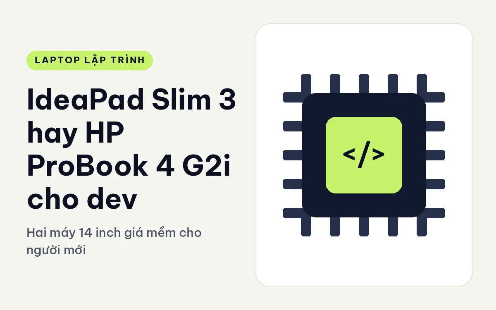
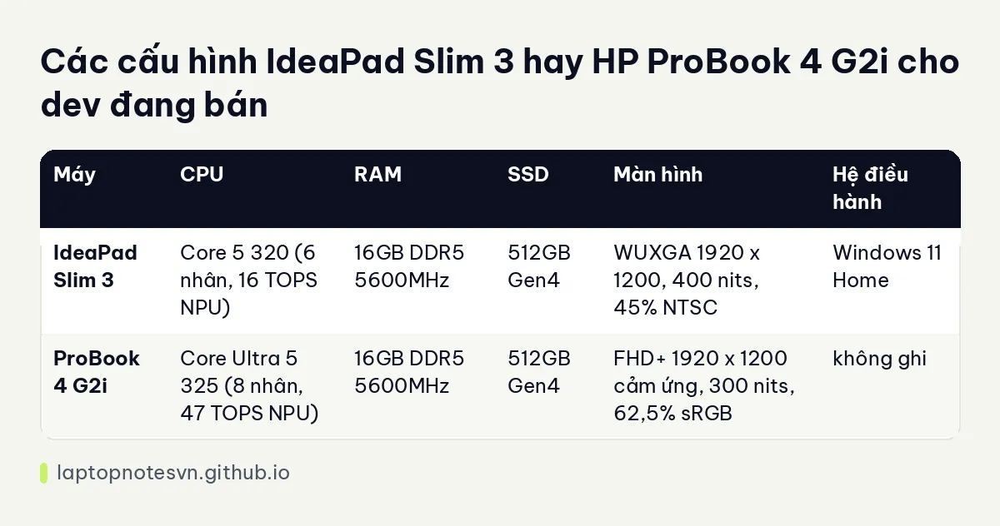

IdeaPad Slim 3 hay HP ProBook 4 G2i cho dev - Hai máy 14 inch giá mềm cho người mới

Với sinh viên ngành công nghệ hoặc người mới chuyển sang lập trình, hai máy 14 inch này nằm ở nhóm ít tốn kém nhất mà vẫn chạy được môi trường code hiện đại. Một chiếc là IdeaPad dành cho người dùng phổ thông. Chiếc còn lại là ProBook của HP, hướng tới doanh nghiệp nhỏ. Nghe thì giống, nhưng chọn sai thì bạn sẽ thấy khác biệt ngay ở cổng, màn hình và khả năng mở rộng.
Máy thứ nhất là Lenovo IdeaPad Slim 3 14 inch.
Máy thứ hai là HP ProBook 4 G2i 14 AI.
Cảm giác cầm và độ bền của hai máy
IdeaPad Slim 3 nặng 1,43 kg, pin 60Wh, màu Luna Grey. Dữ liệu ProBook 4 G2i không ghi cân nặng và dung lượng pin, nên bài này không so hai thông số đó. Bạn nên kiểm tra trực tiếp trên trang sản phẩm hoặc cân thử tại cửa hàng.
Cổng của IdeaPad gồm 2 USB-A, 1 USB-C, HDMI và khe thẻ SD. ProBook có 2 USB-A 5Gbps và HDMI 2.1. Cả hai đều có cổng để nối màn hình ngoài, đủ cho bàn làm việc đơn giản. Nếu bạn cần cổng Thunderbolt thì cả hai máy đều không phải lựa chọn phù hợp.
IdeaPad có 2 khe M.2, nghĩa là bạn có thể thêm ổ SSD thứ hai khi cần. Với dev, điều này tiện khi dữ liệu và image Docker phình ra sau vài tháng. Dữ liệu ProBook không ghi số khe, nên đây là điểm cần xác nhận.
Bản nào đủ sức cho việc code hằng ngày
| Máy | CPU | RAM | SSD | Màn hình | Hệ điều hành |
|---|---|---|---|---|---|
| IdeaPad Slim 3 | Core 5 320 (6 nhân, 16 TOPS NPU) | 16GB DDR5 5600MHz | 512GB Gen4 | WUXGA 1920 x 1200, 400 nits, 45% NTSC | Windows 11 Home |
| ProBook 4 G2i | Core Ultra 5 325 (8 nhân, 47 TOPS NPU) | 16GB DDR5 5600MHz | 512GB Gen4 | FHD+ 1920 x 1200 cảm ứng, 300 nits, 62,5% sRGB | không ghi |
Hai bản cùng 16GB RAM và 512GB SSD, khác nhau ở CPU và màn. Core Ultra 5 325 có 8 nhân và NPU 47 TOPS, mạnh hơn Core 5 320 với 6 nhân và NPU 16 TOPS. Với dev, 8 nhân giúp build nhanh hơn một chút. NPU cao chỉ có ích nếu bạn dùng tính năng AI chạy ngay trên máy.

Màn hình ProBook có cảm ứng đa điểm, còn IdeaPad thì không. Cảm ứng với dev là tính năng ít dùng, nhưng nếu bạn thích lật tài liệu bằng tay thì đây là điểm cộng. Ngược lại, IdeaPad sáng hơn 100 nits, và đó là lợi thế khi làm ngoài trời hoặc gần cửa sổ.
Mỗi máy hợp với nhóm dev nào
- Học lập trình, bài tập, đồ án: cả hai đều đủ, IdeaPad dễ nâng cấp ổ cứng.
- Web, Node.js, Python nhẹ: 16GB đủ dùng khi bạn mở IDE cùng trình duyệt.
- Docker, máy ảo: 16GB bắt đầu chật. Cả hai máy đều không có Thunderbolt nên cũng khó mở rộng bằng thiết bị ngoài.
- Làm bài bằng bút hoặc ghi chú tay: ProBook cảm ứng tiện hơn, dù nó không kèm bút.
Nếu máy này sẽ là máy chính trong ba năm tới, bạn nên đọc bài lập trình viên cần bao nhiêu RAM để cân nhắc dung lượng.
Những điều cần cân nhắc
Dữ liệu cấu hình của ProBook không ghi hệ điều hành, và đây là khoảng trống bạn cần hỏi cửa hàng. IdeaPad Slim 3 kèm Windows 11 Home sẵn, mở máy là dùng. Với máy giá mềm, việc bản quyền hệ điều hành đôi khi là lý do chênh giá.
Tuỳ vào sức bạn chịu, cả hai máy chỉ là điểm xuất phát. Khi dự án lớn dần, bạn có thể chuyển sang các máy như T14 hay E14 để có cổng và bàn phím tốt hơn. Máy phổ thông đủ cho giai đoạn học, nhưng đừng kỳ vọng nó làm trụ cột khi bạn làm việc toàn thời gian.
Lộ trình nâng cấp sau một năm
Máy giá mềm thường được mua khi ngân sách còn hẹp, rồi sau một năm bạn mới thấy thiếu gì. Với IdeaPad Slim 3, hai khe M.2 cho phép thêm ổ thứ hai, nên chỗ chứa là phần dễ giải quyết nhất. RAM thì dữ liệu không nói rõ, vì vậy nên hỏi cửa hàng trước khi quyết định có tính nâng RAM hay không.
Với ProBook 4 G2i, dữ liệu không cho biết số khe SSD. Vì thế khi mua, hãy hỏi thẳng hai câu: còn khe trống không, và RAM có thay được không. Câu trả lời sẽ quyết định máy này sống được bao lâu với bạn.
Thói quen dùng cũng quan trọng. Nếu bạn dọn image Docker định kỳ và giữ dự án trên kho Git từ xa, 512GB dùng được khá lâu. Nếu bạn lưu video, dữ liệu mẫu hoặc mô hình, 512GB sẽ đầy rất nhanh, và khe SSD thứ hai của IdeaPad trở nên đáng giá.
Lời khuyên chọn máy theo từng trường hợp
Chọn IdeaPad Slim 3 nếu bạn cần màn sáng hơn, hai khe SSD, khe SD và Windows có sẵn. Bài IdeaPad Slim 3 cho lập trình có thêm phân tích.
Chọn ProBook 4 G2i nếu bạn muốn chip 8 nhân, màn cảm ứng và cổng HDMI 2.1, hoặc nếu bạn đã quen hệ sinh thái HP. Đừng quên hỏi về hệ điều hành đi kèm.
Cách chọn nhanh: nếu bạn cần mở rộng ổ cứng, IdeaPad. Nếu cần thêm nhân CPU, ProBook.
Đăng ngày 09/11/2026